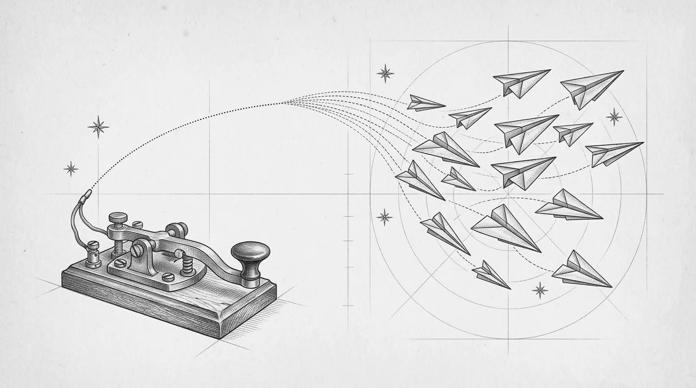
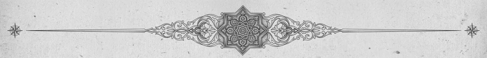

Freedom.
Speed.
Security, your way.
آزادی، سرعت، امنیت — به روش خودت.
پنلِ پروکسیِ خودت، روی یک Cloudflare Worker رایگان. VLESS، Trojan و WARP — روی حسابِ خودت؛ نه سروری، نه واسطهای، نه هزینهای. با مداد کشیده شده، برای تو.
Your personal proxy panel on one free Cloudflare Worker. VLESS, Trojan & WARP — your account, no server, no middleman, no bill. Drawn in graphite.
قبل از نصب، امتحانش کن — دموی زندهTry it without installing — live demo↓یک پنل، روی حسابِ خودت، بیواسطه. اول ببین اصلاً چرا ساخته شد.One panel, on your own account, no middleman. First, why it exists.

از گوشیِ تو تا Worker تا دنیا — مسیر یک بسته را با اسکرول دنبال کن.From phone to Worker to the world — follow a packet as you scroll.
More than just a panel.
بیشتر از یک پنلِ ساده.
هر چیزی که برای یک گذرگاهِ شخصی و امن لازم داری — در یک فایل، روی لبهٔ شبکه.
Everything you need to run a private, secure gateway — in one file, at the edge.
تم گرافیت و کاغذGraphite / Paper theme
Graphite / Paper theme
حسِ یک دفترچهٔ قدیمی: حاشیههای خطچینِ مدادی، بافت کاغذ، حروف سریف و تایپرایتر؛ در سه حالتِ کاغذ، گرافیت و تختهسیاه.
A nostalgic hand-drawn aesthetic — dashed pencil borders, paper grain, serif & typewriter typography, dark and light mode.
دوزبانه و راستچینBilingual & RTL
Bilingual & RTL
فارسی و انگلیسی در یک پنل؛ زبان با یک کلیک عوض میشود و چیدمان هم با آن.
English and Persian in the same panel — switch with a single click.
چندکاربرهMulti-user
Multi-user
برای هر کاربر: سهمیهٔ حجم، تاریخ انقضا، کلید فعال/غیرفعال و یک لینک اشتراکِ خصوصی.
Per-user quota (GB), expiry (days), active/inactive, and one private subscription link each.
اسکنر IP تمیزClean-IP scanner
Clean-IP scanner
رادار داخل پنل، بیش از ۴۲۰ آیپی Cloudflare را از شبکهٔ خودت تست میکند و بهترینها را روی همهٔ کانفیگها اعمال میکند.
An in-panel radar probes 420+ Cloudflare IPs from your network and applies the best to every config.
خروجی چندفرمتهMulti-format configs
Multi-format configs
Base64 برای v2rayNG، Clash/Mihomo، Sing-box و WireGuard برای WARP — با تقریباً هر کلاینتی کار میکند.
Base64 (v2rayNG), Clash/Mihomo, Sing-box and WireGuard (WARP) — imports into almost any client.
امنیتSecurity
Security
رمز ادمین با SHA-256، نشستهای امضاشده با HMAC، مسیرِ مخفی ادمین و استتارِ مسیرهای ناشناس.
SHA-256 hashed admin password, HMAC-signed sessions, hidden admin path and camouflage for unknown routes.
موتور سرعتSpeed Engine · v0.12
Speed Engine
آیپیهای کمپینگ بر اساس دیتاسنتر (colo) نزدیک به تو، اشتراک چندنودی، و تست سرعت واقعی از مسیر پروکسی — نه از یک سرور ثالث.
Colo-aware low-ping IPs, multi-node subscriptions and a real speed test through the proxy path — not some third-party server.
استخر IP کشوریCountry IP Pool · v0.7
Country IP Pool
کشور را انتخاب کن (از ۷۹ کشور)؛ پنل خودش تست میکند و بهترینها را روی کانفیگ مینشاند — نام کانفیگ هم پرچمش را میگیرد: 🇩🇪 Nika Net.
Pick a country (79 available), the panel probes and applies the best — the config name even gets the flag: 🇩🇪 Nika Net.
مگا اسکنر + تست رلهMega scanner · v0.13
Mega scanner + relay test
اسکنِ کامل رنجهای Cloudflare (تا ۱٫۵ میلیون آیپی، v4 و v6) با زمان تخمینی و ذخیرهٔ نتیجه؛ بهعلاوه تست همهٔ دامنههای رله و انتخاب خودکارِ بهترین.
Full Cloudflare-range enumeration (up to 1.5M IPs, v4 + v6) with ETA and saved results, plus relay-domain testing with auto-pick.
بهروزرسانی خودکار (OTA)One-tap updates · v0.5
One-tap OTA updates
پنل نسخهٔ تازهٔ مخزن را میبیند، با یک دکمه خودش را نو میکند و دادههایت دستنخورده میماند. ربات هم خبرش را به همه میرساند.
The panel spots a new release, redeploys itself with one tap and keeps your KV intact. The bot announces it to everyone.
صفحهٔ وضعیت کاربرUser status page · v0.7
User status page
هر کاربر یک صفحهٔ خصوصی دارد: عقربهٔ مصرف، روزهای باقیمانده، QR و دکمهٔ «افزودن به اپ» — با همین طراحیِ مدادی.
Every user gets a private page: circular usage gauge, days left, QR code and add-to-client buttons — in the same pencil style.
پشتیبانی داخل رباتIn-bot support · v0.9
In-bot support
تیکت با انتخاب دسته، پیام مستقیم به مالک، پروفایل کاربر در پنل ادمین، جستوجو و فیلتر و خروجی CSV — همه داخل تلگرام.
Category tickets, private messages to the owner, user profiles in the admin view, search/filter/CSV export — all inside Telegram.
Three ways through the wall.
سه راه برای عبور از دیوار.
پروتکل اصلی؛ روی WebSocket + TLS با خروجی cloudflare:sockets. سریع، سبک و سازگار با اکثر کلاینتها.
Primary protocol — over WebSocket + TLS with cloudflare:sockets outbound. Fast, light and widely supported.
پروتکل دوم با پنهانکاری بهتر؛ احراز هویت هدر با SHA-224. برای شرایطی که VLESS شناسایی میشود.
Secondary protocol with better stealth — SHA-224 header auth. For when VLESS gets fingerprinted.
خروجی کانفیگ WireGuard برای تماسهای صوتی/تصویری (UDP) و شرایط بحرانی؛ چون Workers ترافیک UDP را روی VLESS/Trojan حمل نمیکند.
WireGuard config export for voice/video calls (UDP) and critical situations — Workers don't carry UDP over VLESS/Trojan.
How a packet gets through.
یک بسته چطور رد میشود.
نقشهٔ مهندسی مسیر: از دستگاه شما، از دل فیلترینگ، تا لبهٔ Cloudflare و از آنجا به اینترنت آزاد. روی هر ایستگاه بایستید.
The engineering plan of the route: from your device, through the filter, to the Cloudflare edge and out to the open internet. Hover each station.
کلاینت (v2rayNG، Hiddify، Clash…) کانفیگ VLESS/Trojan را میگیرد و ترافیک را داخل یک اتصال WebSocket + TLS میپیچد — از بیرون فقط یک HTTPS معمولی دیده میشود.
Your client (v2rayNG, Hiddify, Clash…) takes the VLESS/Trojan config and wraps traffic inside WebSocket + TLS — from the outside it looks like ordinary HTTPS.
Worker شما در نزدیکترین دیتاسنتر اجرا میشود، بسته را باز میکند و به مقصد وصل میشود. با «آیپی تمیز» به یکی از آدرسهای CF میرسید که فیلتر نشده.
Your Worker runs in the nearest data center, unwraps the packet and connects to the destination. A “clean IP” lands you on a CF address that isn’t blocked.
مقصد فقط Cloudflare را میبیند. نه سروری اجاره کردهاید، نه لاگی جایی ذخیره میشود؛ وقتی نباشید، Worker هم خاموش است. هزینه: صفر.
The destination only sees Cloudflare. No rented server, no logs kept anywhere; when you’re away the Worker is simply idle. Cost: zero.
این خودِ پنل است، نه عکسش. ورق بزن، کلیک کن، حتی خرابش کن.This is the actual panel, not a screenshot. Flip, click, break it.
Don't take our word — touch it.
حرف ما را باور نکن — خودت لمسش کن.
همین پنل واقعی است که روی یک Worker نمایشی اجرا میشود — با دادههای ساختگی که فقط برای تو ساخته شدهاند. کاربر بساز، حذف کن، تنظیمات را عوض کن؛ هیچچیز واقعی خراب نمیشود.
This is the actual panel, running on a sandbox Worker with fake data spun up just for you. Add users, delete them, change settings — nothing real can break.
| نام | name | سهمیه | quota | انقضا | expiry | |
|---|---|---|---|---|---|---|
| sara | 31/50 GB | 12d | /sub/••• | |||
| amir | 14/50 GB | 30d | /sub/••• | |||
| guest | 9/10 GB | 2d | /sub/••• |
vless://…@your-domain:443?security=tls&sni=your-domain#Nikademo · هر بازدیدکننده نسخهٔ مستقلِ خودش را میگیردPassword is pre-filled: demo · every visitor gets an isolated copy
fig. 07 — the wireTwo wires into the workshop.
دو سیم، تا کارگاهِ ما.
یکی برایت پنل میسازد، دیگری خبرها را میآورد. هر دو رایگان، هر دو داخل تلگرام.
One builds your panel for you, the other keeps you in the loop. Both free, both inside Telegram.
توکن Cloudflare را بده — یا با لینک آماده بساز — و ربات در چند ثانیه Worker، حافظه و پنل را برایت بالا میآورد. بدون ترمینال.
Hand it a Cloudflare token — or create one via its ready link — and it deploys the Worker, KV and panel in seconds. No terminal.
شروع با رباتOpen the bot →خبر نسخههای تازه، آیپیهای تمیزِ نو، ترفندهای اتصال و گفتوگو با بقیهٔ کسانی که پنلِ خودشان را دارند.
Release notes, fresh clean-IP lists, connection tips and conversation with others who run their own panel.
عضو کانال شوJoin the channel →
ربات تلگرام همهچیز را انجام میدهد؛ اگر اهل ترمینالی، خودت دست به کار شو.The Telegram bot does everything. Or open a terminal yourself.
From idea to connection
in three moves.
از ایده تا اتصال، در سه حرکت.
- ربات را باز کنOpen the botدر تلگرام به @NikaNetLauncher_bot برو و
/startبزن.Go to @NikaNetLauncher_bot and send/start. - توکن API بدهHand it an API tokenربات لینکِ ساخت توکن Cloudflare با دسترسیِ درست را میدهد؛ توکن را برایش بفرست.The bot links you to a Cloudflare token template with the right scopes; paste it back.
- منتظر پیام «آماده است» باشWait for “ready”Worker و حافظه ساخته میشوند و آدرس پنل با رمز اولیه برایت میآید.Worker and KV are created; you get the panel URL and first password.
کلون کن
Clone
مخزن را از GitHub بگیر و وارد پوشه شو.
Grab the repository from GitHub and step inside.
بساز
Build
با npm run build یک فایل واحد dist/worker.js ساخته میشود.
npm run build produces a single deployable dist/worker.js.
مستقر کن
Deploy
با Wrangler دیپلوی کن یا کد را در داشبورد Cloudflare پیست کن. سپس /admin را باز کن و رمز ادمین را بگذار.
Deploy with Wrangler — or paste into the Cloudflare dashboard. Open /admin, set your password, done.
* اختیاری: یک KV namespace با نام NIKA_KV یا دیتابیس D1 با نام NIKA_DB برای ذخیرهسازی دائمی متصل کن.
* Optional: bind a KV namespace as NIKA_KV or a D1 database as NIKA_DB for persistent storage.
# 1. clone git clone https://github.com/NikaTeem/Nika-Net.git cd Nika-Net # 2. install & build npm install npm run build # → dist/worker.js # 3. deploy to Cloudflare npx wrangler login npm run deploy # open https://<your-worker>.workers.dev/admin
$ Still being drawn.
هنوز داریم میکشیم.
دفترچهٔ کار — آخرین تغییرات مخزن، مستقیم از GitHub. هیچ سطری اینجا با دست نوشته نشده.
The workshop ledger — latest commits, pulled straight from GitHub. Nothing here is typed by hand.
The suggestion box.
صندوق انتقادات و پیشنهادات
هر عددی که اینجا میبینی زنده است و از دیتابیس میآید — هیچ نظری از پیش کاشته نشده. انتقادِ تند هم قبول است؛ با همانهاست که بهتر میشویم.
Every number here is live from the database — nothing is pre-seeded. Harsh critique welcome; that's how we get better.
Everything else, filed.
بقیهٔ چیزها، بایگانیشده.
ابزارها، مقایسه، کلاینتها، آینهها، پرسشها و تاریخچهٔ نسخهها — هرکدام را لازم داشتی باز کن.
Tools, comparison, clients, mirrors, FAQ and release history — open whichever you need.
AجعبهابزارToolkitping · config reader · app picker · QR
Tools from the drawer.
ابزارهای کشوی میز.
پنج ابزارِ کوچک که همینجا در مرورگرِ خودت اجرا میشوند — هیچ دادهای به هیچ سروری نمیرود.
Five small tools that run right here in your browser — nothing is sent to any server.
وضعیت شما نسبت به Cloudflare
Where you stand vs. Cloudflare
میسنجیم آیا از اینجا به لبهٔ Cloudflare میرسید، کدام دیتاسنتر به شما سرویس میدهد و تأخیر تقریبی چقدر است. اگر این کار کند، Nika Net هم برای شما کار میکند.
We test whether you can reach the Cloudflare edge from here, which data center serves you, and rough latency. If this works, Nika Net will work for you.
کانفیگ را بخوان، نه حفظ کن
Read the config, don’t memorize it
یک لینک vless:// یا trojan:// را اینجا بچسبانید تا اجزایش را (سرور، پورت، انتقال، TLS، SNI، مسیر) خوانا ببینید. همهچیز محلی است.
Paste a vless:// or trojan:// link to see its parts (host, port, transport, TLS, SNI, path) in plain language. Everything stays local.
برای دستگاه شما، کدام اپ؟
Which app for your device?
سیستمعامل شما را تشخیص دادیم. کلاینتهای پیشنهادی برای VLESS/Trojan/WARP با لینک رسمی.
We detected your OS. Recommended clients for VLESS/Trojan/WARP with official links.
دامنهات به Cloudflare رسیده؟
Is your domain on Cloudflare yet?
دامنهای که میخواهید روی Worker بگذارید را بنویسید. رکوردهای DNS را از DoH Cloudflare میخوانیم و میگوییم پروکسی نارنجی فعال است یا نه.
Type the domain you plan to attach to your Worker. We read its DNS over Cloudflare DoH and tell you if the orange proxy is on.
شناسه بساز، QR بگیر
Mint an ID, get a QR
برای متغیر UUID ورکر یک شناسهٔ تصادفی امن بسازید (با crypto.randomUUID). یا هر لینک اشتراک/کانفیگی را بچسبانید تا QR واقعیاش را همینجا اسکن کنید.
Generate a cryptographically random UUID for your Worker variable. Or paste any subscription/config link to get a real, scannable QR — offline.
— — — —Bمقایسهٔ صادقانهHonest comparisonvs BPB · EdgeTunnel · 3x-ui · Marzban
Where it stands.
مقایسهٔ صادقانه با بقیه.
هر ابزاری جای خودش را دارد. اگر VPS داری، 3x-ui و Marzban عالیاند. نیکا نت برای وقتی است که سرور نداری، نمیخواهی پول بدهی، و میخواهی در دو دقیقه از گوشی راه بیفتی.
Every tool has its place. If you own a VPS, 3x-ui and Marzban are excellent. Nika Net is for when you have no server, no budget, and two minutes on your phone.
| Nika Net | BPB Panel | Worker خام (edgetunnel) | Raw worker (edgetunnel) | ||
|---|---|---|---|---|---|
| هزینه / سرور | Cost / server | $0 · بدون سرورserverless | $0 | $0 | |
| چندکاربره با سهمیه و انقضا | Multi-user, quota & expiry | ✔ | ✕ | ✕ | |
| صفحهٔ وضعیت خصوصی هر کاربر | Private status page per user | ✔ QR | ✕ | ✕ | |
| اسکنر IP تمیز داخل پنل | In-panel clean-IP scanner | ✔ 1.5M | ~ | ✕ | |
| استخر IP کشوری + پرچم | Country IP pool + flag | ✔ 79 | ✕ | ✕ | |
| تست سرعت واقعی از مسیر پروکسی | Real speed test via proxy path | ✔ | ✕ | ✕ | |
| بهروزرسانی خودکار OTA | One-tap OTA update | ✔ | ✕ | ✕ | |
| نصب از تلگرام + پشتیبانی داخل ربات | Install from Telegram + in-bot support | ✔ | ✕ | ✕ | |
| فارسی و راستچین | Persian & RTL | ✔ | ~ | ✕ | |
| Fragment ضد-DPI | Anti-DPI fragment | در نقشهٔ راه | on roadmap | ✔ | ✕ |
| متنباز | Open source | MIT | ✔ | ✔ |
| Nika Net | 3x-ui | Marzban | Hiddify | ||
|---|---|---|---|---|---|
| سرور لازم دارد | Needs a server | ✕ خیرno | VPS | VPS | VPS |
| هزینهٔ ماهانه | Monthly cost | $0 | $4–10 | $4–10 | $4–10 |
| زمان راهاندازی | Setup time | ≈ 2 min | 15–30 min | 20–40 min | 10–20 min |
| IP سوختنی؟ | Burnable IP? | ✕ Anycast | ✔ | ✔ | ✔ |
| نگهداری / امنیت سرور | Server upkeep / hardening | صفرzero | ✔ | ✔ | ~ |
| پروتکلها | Protocols | VLESS · Trojan · WARP | 10+ | 10+ | 10+ |
| UDP / تماس | UDP / calls | WARP | ✔ | ✔ | ✔ |
| محدودیت روزانه | Daily limit | 100k req | — | — | — |
| چندکاربره + سهمیه | Multi-user + quota | ✔ | ✔ | ✔ | ✔ |
| نصب از گوشی | Install from a phone | ✔ Telegram | ✕ | ✕ | ✕ |
✎ جدول بر اساس مستندات عمومی هر پروژه در شهریور ۱۴۰۵ نوشته شده. اشتباهی دیدی؟ در صندوق بگو تا اصلاح کنیم.✎ Based on each project's public docs as of Sep 2026. Spotted an error? Drop it in the box and we'll fix it.
CکلاینتهاClientsandroid · ios · windows · mac · linux
Works with the apps you already have.
با اپهایی که همین الان داری کار میکند.
لینک اشتراک هر کاربر را در هر کدام از اینها بریز. سیستمعاملت را انتخاب کن.
Paste a user's subscription link into any of these. Pick your platform.
Dنسخهها و دفتر ثبتReleases & logbooklive from version.json
Shipping almost daily.
تقریباً هر روز یک نسخه.
هر نسخهای که منتشر شده، مستقیم از تاریخچهٔ version.json مخزن. پنلهای نصبشده همینها را با یک دکمه میگیرند.
Every version ever shipped, read live from the repo's version.json history. Installed panels pull these with one tap.
Runs entirely
at the edge.
کاملاً روی لبهٔ شبکه اجرا میشود.
بدون VPS، بدون Docker، بدون آپدیت شبانه. Cloudflare Worker خودش مقیاس میگیرد و شما فقط پنل را باز میکنید. اطلاعات در KV یا D1 (هر دو رایگان) ذخیره میشود.
No VPS, no Docker, no midnight updates. The Cloudflare Worker scales itself; you just open the panel. State lives in KV or D1 — both free.
- استقرار با ربات تلگرام یا Wrangler
- Deploy via Telegram bot or Wrangler
- ذخیرهسازی: D1 / KV / حافظه
- Persistence: D1 / KV / memory
- استتار مسیرهای ناشناس برای پنهانکاری
- Camouflage on unknown routes
EآینههاMirrorsif the main domain is blocked
If this page goes dark.
اگر این صفحه خاموش شد
این سایت از چند مسیر مستقل در دسترس است. یکی را ذخیره کن — اگر دامنهٔ اصلی فیلتر شد، بقیه کار میکنند. نسخهٔ آفلاین هم در همین مرورگر ذخیره میشود.
This site is reachable through several independent routes. Bookmark one — if the main domain is blocked, the others keep working. An offline copy is also stored in this browser.
Fپرسشهای پرتکرارFAQ8 questions
Asked often.
سؤالهای پرتکرار
واقعاً رایگان است؟Is it really free?
بله. پلن رایگان Cloudflare روزانه ۱۰۰٬۰۰۰ درخواست Worker میدهد که برای استفادهٔ شخصی و چند کاربر کافی است. دامنهٔ workers.dev هم رایگان است.
Yes. Cloudflare's free plan gives 100,000 Worker requests per day — plenty for personal use and a handful of users. The workers.dev domain is free too.
ربات تلگرام دقیقاً چه میکند؟What exactly does the Telegram bot do?
ربات @NikaNetLauncher_bot با توکن Cloudflare تو (که فقط دسترسی Workers دارد) یک Worker میسازد، کد Nika Net را در آن میگذارد، KV را متصل میکند و آدرس پنل را برمیگرداند. توکن رمزنگاریشده ذخیره میشود و هر وقت بخواهی میتوانی از داخل Cloudflare باطلش کنی.
@NikaNetLauncher_bot takes your Cloudflare token (Workers scope only), creates a Worker, uploads Nika Net, binds KV and returns your panel URL. The token is stored encrypted and can be revoked from Cloudflare any time.
به دانش فنی نیاز دارم؟Do I need technical skills?
نه چندان. ربات Launcher در تلگرام همهچیز را انجام میدهد؛ فقط یک حساب Cloudflare لازم داری. اگر حرفهایتری، با Wrangler هم میشود.
Not much. The Launcher bot on Telegram does everything — you only need a Cloudflare account. If you prefer, Wrangler works too.
چرا تماس صوتی روی VLESS کار نمیکند؟Why don't voice calls work over VLESS?
Workers ترافیک UDP را حمل نمیکند. برای تماسها از خروجی WARP (WireGuard) استفاده کن که داخل پنل ساخته میشود.
Workers don't carry UDP. Use the WARP (WireGuard) export generated inside the panel for calls.
اطلاعات کاربران کجا ذخیره میشود؟Where is user data stored?
در KV یا D1 حساب خودت. هیچ دادهای به جایی ارسال نمیشود؛ کد متنباز است و میتوانی خودت بررسی کنی.
In the KV or D1 of your own account. Nothing is sent anywhere; the code is open source and auditable.
با چه کلاینتهایی سازگار است؟Which clients are supported?
v2rayNG، Hiddify، Streisand، NekoBox، Clash/Mihomo، Sing-box و WireGuard — لینک اشتراک هر کاربر برای همهٔ اینها خروجی دارد.
v2rayNG, Hiddify, Streisand, NekoBox, Clash/Mihomo, Sing-box and WireGuard — each subscription link serves all of them.
Deploy your own edge
in the next five minutes.
در پنج دقیقهٔ آینده، گذرگاهِ خودت را بساز.
یک حساب رایگان Cloudflare و یک تلگرام کافی است. نه کارت بانکی، نه سرور، نه دانشِ خاص.
A free Cloudflare account and Telegram are all you need. No credit card, no server, no expertise.
نامه تمام شد. میماند مهر و امضا.The letter ends. Seal and signature.
"Your domain, your bandwidth, your data.
No shared server. No middleman. No cost."
«دامنهٔ خودت، پهنای باند خودت، دادههای خودت. بدون سرور مشترک، بدون واسطه، بدون هزینه.»
اینترنت، دستنوشتهٔ خودت.
The internet, in your own handwriting.